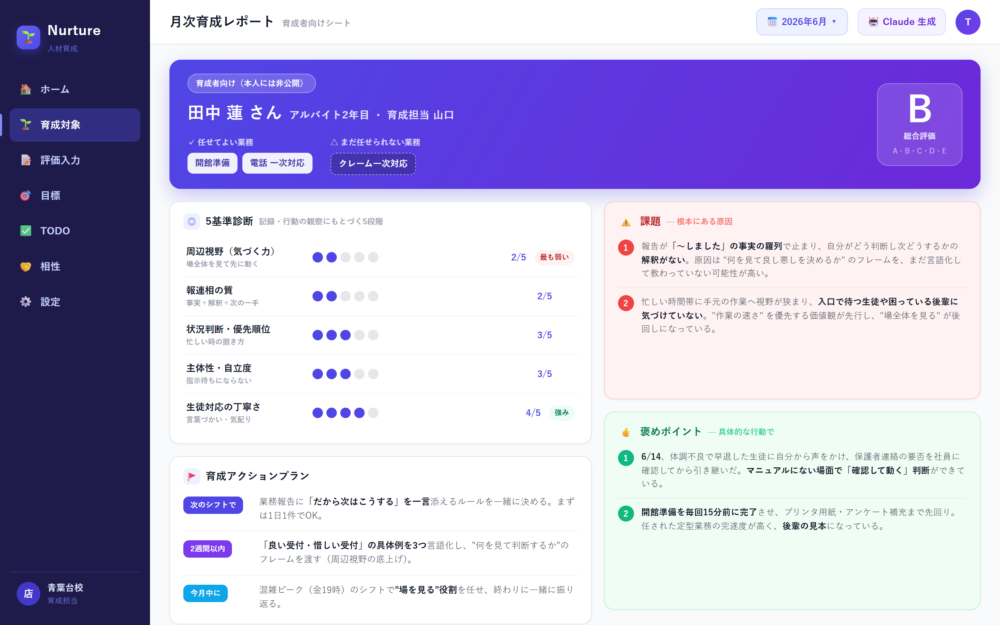
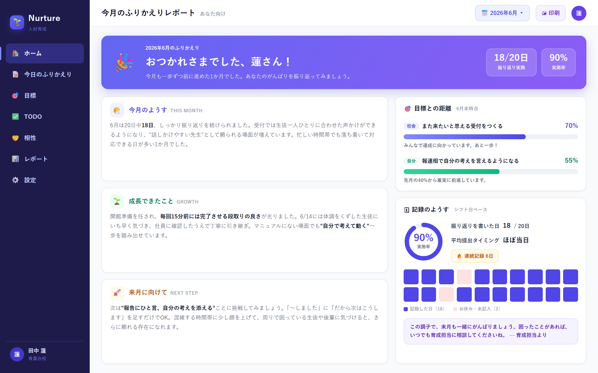
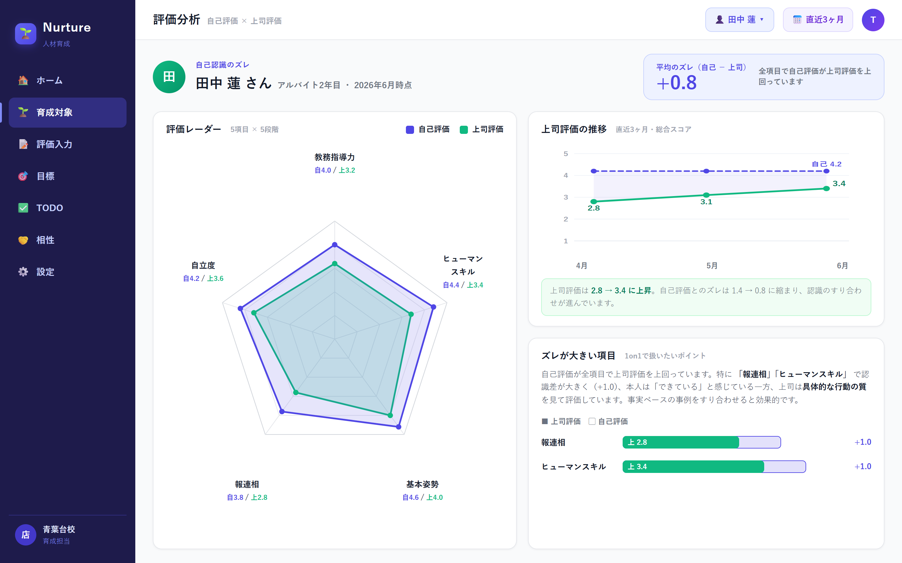

人材育成 × AI — 本番運用中
アルバイト・新人スタッフの育成を見える化するWebアプリ。日々の軽い記録から、AIが課題・育成方針・接し方のコツまで提案します。

担当者の勘と記憶が頼り。誰がどこまでできるのか共有されない。
伝えたことが流れて消える。成長したのか停滞なのか、誰も言えない。
本人は「できている」つもり、上司は「まだ」— この認識ギャップが一番こじれる。
Features
記録は軽く、分析は深く。育成対象を追い詰めない設計です。
日々の記録
本人はその日の振り返りを星＋3項目でサッと記録。育成側は評価シートに沿って手早く入力。スマホからPWAで開けるので、シフト終わりの1分で終わります。

AI育成分析
溜まった記録からAIが月次育成レポートを自動生成。本人向けは応援トーン、育成者向けは本質志向の2バージョン。課題の根本原因の仮説、任せてよい業務の線引き、育成アクションプランまで踏み込みます。
ズレの可視化
本人の自己評価と育成側の評価をレーダーチャートで重ねて表示。「本人が気づいていない課題」「過小評価している強み」が一目でわかり、面談の質が変わります。

組織対応
会社→ブロック→校舎の階層管理に対応。拠点ごとの評価実施率や評価分布を横断で把握でき、育成の仕組みを組織全体に広げられます。
Nurtureは実際の教育現場で本番運用中。「育成対象を監視しない・追い詰めない」を設計方針に掲げ、本人向けの文章はすべて前向きなトーンで生成されます。
メールで育成の悩みを聞かせてください
実際の画面をお見せします
貴社の評価項目に合わせてセットアップ
運用しながら一緒に改善していきます
人数・拠点数に応じて個別にご案内しています。トライアルは無料です。
できます。評価カテゴリ・基準・定期評価の項目は管理画面から自由にカスタマイズできます。
本人向けと育成者向けでレポートを分けています。本人には前向きなトーンの内容だけが届き、閲覧範囲は管理者が制御できます。